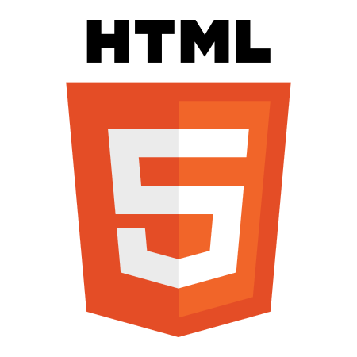
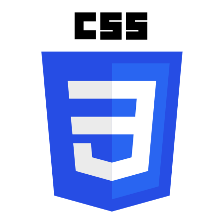
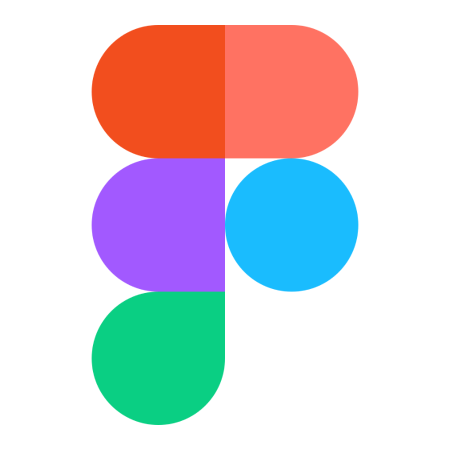
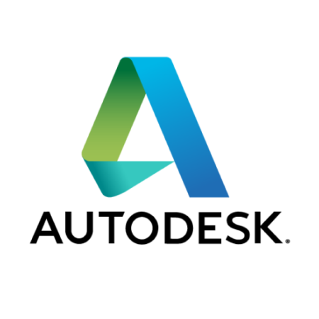
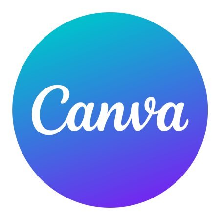

A propos
J'ai lontemps travaillé dans la collecte de fond en face à face pour des ONG et j'avais le besoin de changer de voie. C'est après m'être formé en autodidacte que j'ai entamé ma reconversion professionnelle je suis le curcus Devops au Camus Numérique in The Alps de Grenoble.
Informatique





Formation
2009
Master 2 Recherche Biotechnologie, Santé et Management. UFR de Pharmacie, Université Grenoble Alpes
2007
Licence Biochimie. Université Grenoble Alpes
| Années | Entreprises | Intitulé du poste | Ce que j'ai réalisé |
|---|---|---|---|
| 2018/Juin 2021 | ONG Conseil France | Responsable d'équipe | Formation, coaching et management d'équipes de recruteurs en charge de collecter des fonds pour diverses associations. Garant de l'éthique, de la performance, et du bon suivi administratif de chaque mission de collecte. Plus de 15 missions dans toute la France (Grenoble, Paris, Rouen, Nice, Annecy/Chambéry, etc.) pour la LPO, La Ligue Contre le Cancer, APF, Médecin du monde, le GSCF, Partage, AIDES, le WWF, Surfrider. |
| 2015/2018 | ONG Conseil France | Recruteur de donateurs | Street Marketing pour les ONG. Sens de l'écoute et de la communication. Persévérance, porter des valeurs de solidarité, d'écologie et d'humanisme. |
| 2012/2015 | Éducation nationale | Assistant d'éducation,CPE | • Accueil et réception du public, réception des appels téléphoniques, traitement des courriers. • Pédagogie, sens de l'écoute et de l'observation. • Accompagnement de l'équipe pédagogique et administrative. • Référent CPE pour les 3èmes au collège de Corenc. |
| Janv.2012/Août 2012 | Institut Fourrier | Gestionnaire de mission | Secrétariat : accueil physique des chercheurs, gestion des courriers et mails. Préparation et traitement des missions : utilisation des logiciels financiers SIFAC et Silab. Gestion financière et aide à l'organisation de colloques. Vérification, traitement et archivage des documents administratifs. Mise en place d'un nouveau protocole pour le traitement des missions. |
| Oct.2011/Déc.2011 | Aéroport de Grenoble | Assistant d'avion | Gestion d'équipe pour le chargement et le déchargement en soute. Guidage au casque et/ou à l'aide de balises en anglais. |
| 2009 &2008 | CEA/CERMAV/UJF | Ingénieur d'étude stagiaire | Analyse globale par électrophorèse bidimensionnelle de la différenciation de cellules myéloïdes progénitrices (LBBSI, CEA-CNRS-UJF). Criblage d'inhibiteurs compétitifs pour la lectine PA-IL de Pseudomonas aeruginosa (CERMAV, CNRS-UJF). |